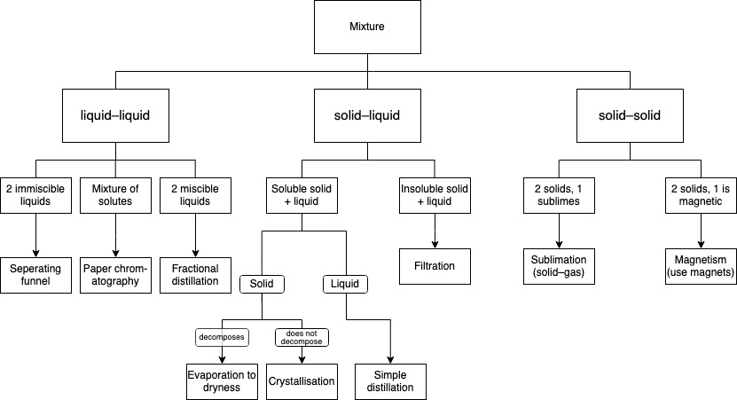
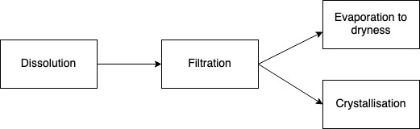

Chapter 1
Experimental Chemistry
I. Measurements and Apparatus
Measurements
- Chemistry is an Experimental science.
- Chemists make observations and take measurements in an experiment.
1.1 4 basic physical quantities measured in Chemistry:
- volume
- time
- temperature
- mass
1.2a Common physical quantities
| Measurement |
Common unit |
SI unit |
| Volume of liquids |
- cubic centimetre (cm³)
- cubic metre (m³)
- cubic decimetre (dm³)
|
cubic metre (m³) |
| Volume of gases |
|
cubic metre (m³) |
| Temperature |
- degrees celcius (ºC)
- kelvin (K)
|
kelvin (K) |
| Mass |
- miligrams (mg)
- grams (g)
- kilograms (kg)
|
kilograms (kg) |
1.2b Unit conversions
| Liquids |
Gases |
Temperature |
Mass |
1 ml = 1 cm³
1 L = 1000 ml
1000 ml = 1000 cm³
1000cm³ = 1 L = 1 dm³
|
1 dm³ = 1000 cm³ = 1 L |
K = ºC = 273 |
1 kg = 1000 g |
Apparatus
The apparatus used depends on:
- volume being measured
- how accurate the measurements need to be
1.3 Measuring volume of liquids
| Apparatus |
Diagram |
What it measures |
Accuracy |
| Beaker |
 |
Approximate volume of liquid |
Nil |
| Conical flask |
 |
| Measuring cylinder |
 |
Accurate to 1 cm³
e.g. 30 cm³ |
1.3a Meniscus
When taking measurements from appartuses such as measuring cylinders and burettes, there is a curved line called a meniscus.

Tips for reading menisci
- take note of curvature of meniscus
- read at eye level to avoid parallax error
- read either at bottom or top of meniscus
1.4 Taking measurement using a burette
| Apparatus |
Diagram |
What it measures |
Accuracy |
| Burette |
 |
Measures a fixed volume of liquid accurately |
Accurate to 0.1 cm³
e.g. 25.6 cm³
|
Burettes are measured top-down. That is to say, the 0 is on top.
Initial reading of burette = 0.80 cm³ (to 2 d.p.)
Final reading of burette = 26.50 cm³ (to 2 d.p.)
Volume of liquid displaced = 26.50−0.8 cm³
=25.70 cm³ (again, to 2 d.p.)
1.5 Taking measurement using a pipette
Features of pipettes
- Draws an accurate, set volume of exactly 20.0, 25.0 or 50.0 cm³ of liquid drawn to a mark.
- Pipette fillers are used to draw the liquid up.
- Usually, pipetts are used for transferring liquid to another container (e.g. conical flask)
| Apparatus |
Diagram |
What it measures |
Accuracy |
| Pipette |
 |
Measures a variable volume of liquid accurately. |
Accurate to 0.1cm³
e.g. 10 cm³, 20 cm³, 25 cm³
|
1.6 Measuring volume of gases, temperature and mass
Gas
| Apparatus |
Diagram |
What it measures |
| Gas syringe |
 |
Accurate measurements can either be read on the graduated scale, or recorded using a data logger. |
Temperature
| Apparatus |
Diagram |
What it measures |
| Thermometer |
 |
Record temperature |
Time
| Apparatus |
Diagram |
What it measures |
| Stopwatch |
 |
Measure time |
| Stop-clock |
 |
Mass
| Apparatus |
Diagram |
What it measures |
| Electronic balance |
 |
Measure the amount of matter contained in a substance |
| Beam balance |
 |
II. Gas collection
2.1 Drying Gases
- At times, a dry sample of gas is needed for an experiment
- Drying gas is done by passing the gas through drying agent
| Drying agent |
Concentrated sulfuric acid |
Quick lime |
Fused calcium chloride |
| Experimental set-up |
 |
 |
 |
| Dries: |
All gases except ammonia |
Dry ammonia |
All gases except ammonia |
2.2 Collecting gases in the lab
Gases may be collected using the following methods:
- using a gas syringe;
- based on the physical properties of the gas
- solubility of the gas in water
- density of the gas compared to the density of air
2.2a Common gases and their properties
| Gas |
Solubility in water |
Density as compared to air |
| Ammonia |
extremely soluble |
less dense |
| Carbon Dioxide |
slightly soluble |
denser |
| Chlorine |
soluble |
denser |
| Hydrogen |
insoluble |
less dense |
| Hydrogen Chloride |
very soluble |
denser |
| Oxygen |
slightly soluble |
slightly denser |
| Sulfur dioxide |
very soluble |
denser |
2.3 Methods of collecting gases
|
|
Displacement of water |
Upwards displacement of air |
Downwards displacement of air |
| Diagram |
 |
 |
 |
| When to use |
Insoluble or slightly soluble gases in water |
- Fairly soluble – soluble gases in water
- Gases denser than air
|
- Fairly soluble – soluble gases in water
- Gases less dense than air
|
| Examples |
Hydrogen gas, Oxygen gas, Carbon dioxide |
Chlorine gas, Hydrochloric acid, Carbon dioxide, Sulfur dioxide |
Ammonia (NH4) |
III. Pure substances and mixtures
3.1 Why pure substances
Most substances are mixtures. Therefore, there is a need for pure substances. (makes no sense without context like this but its ok ig)
Reasons:
- Obtain chemicals that can be used to make useful substances, e.g. medicine
- Identify substances through chromatography
3.2 Pure substances v.s. mixtures
| Pure substances |
Mixtures |
| Made out of 1 substance |
Made out of ≥2 substances physically combined |
| Fixed melting and boiling point |
Melts or boils at a temperature range |
IV. Separation Techniques

4.1 Terms used to describe solutions
| Term |
Definition |
Example |
| Solute |
Solid that gets dissolved |
Milo powder |
| Solvent |
Liquid that dissolves |
Water |
| Solution |
Solute + solvent |
Milo |
| Residue |
Insoluble solid trapped in filter papers |
Sand |
| Filtrate |
Liquid that passes through the filter paper |
Water |
| Misciblity |
Ability of a substance to dissolve in another |
Nil |
* Note: If the indissolvable solute is significantly denser ('heavier') than the solvent, decanting can be used. It is a process where the heavier solute is allowed to sink (either normally or using centrifugal force), then the solute-solvent is poured with only the solvent poured out (as the solute is too heavy and is sunk to the bottom).
4.2 Insoluble liquid from solid
4.2a Filtration
Suitable for seperating:
- Solid-solid mixture
- Solid-liquid mixture containing insoluble solids
- This works only if the particles concerned are of different sizes.
- The solute has to be much bigger than the solvent.
- The filter material acts as a sieve which allows smaller particles to pass through, but retain the larger particles.
Real-world usage of filtration
4.2b Evaporation to dryness
- Used to obtained soluble solids from solution
- Can only be used if solid does not decompose on heating
- e.g. sodium chloride solution (NaCl)
4.2b Crystallisation
- Can only be used if solid decomposes upon heating
- e.g. sugar solution, copper (II) sulphate solution
Crystallisation process:
Step 1:
Solution is heated until it is saturated, or when most of the solvent has been removed.
Saturation test
- Dip a clean glass rod into solution to be tested,
- Remove glass rod, there should be some solution on it.
- If small crystals are formed as the solution on the glass rod cools down, the solution is saturated.
|
Step 2:
Cool solution so as to allow pure crystals to form.
|
|
Remove the crystals by filtration.
Purifying crystals
Wash the crystals with a small amount of cold, deionised water, and dry between 2 filter papers.
|
4.3 Solid from solid
Main differentiating factor in different methods:
- If mixture of solids which behave diffferently in a particular solvent
- If one of the solids sublimes upon heating
- If one of the solids is magnetic
4.3a Filtration and evaporation/crystallisation
Differentiating factor:
(1) — Mixture of solids which behave differently in a particular solvent
Requirements
- One component is soluble while the other is the only one in the solvent (i.e., there must be only 2 unique solids.)
- Requires a solvent which will only dissolve one of the solids
Examples of solvents:
- common salt + sand → water
- naphathalene + sand → methylated spirits (natural, organic Meth™ as a solvent)
Basic steps:

4.3b Sublimation
Differentating factor:
(2) Solids sublimes upon heating
Requirements
Examples
- iodine + copper mixture
- ammonium chloride + sodium chloride mixture
4.3c Use of magnetism
Differentiating factor
(3) One of the solids is magnetic
Requirements
- One of the solids is magnetic
Example(s):
- Iron fillings + sulphur
- The iron fillings will be attracted magnets brought near them, while the sulfur stays behind.
4.4 Liquid from liquid
Terms used:
| Term |
Definition |
| Distillate |
The liquid that distills over. |
| Miscible |
LIquids that mix completely to form a single layer |
| Immiscible |
Liquids that do not mix |